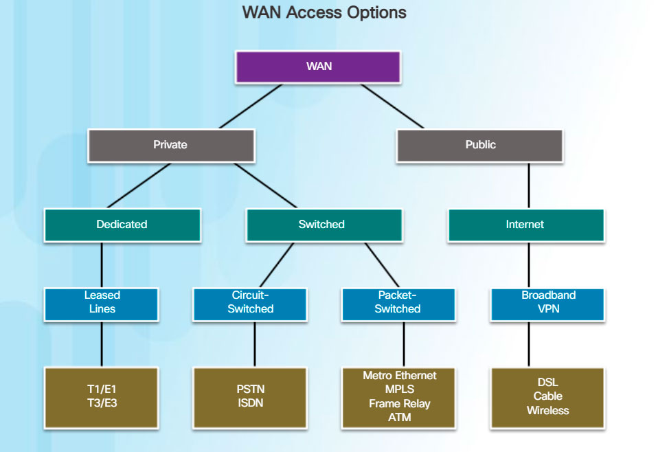
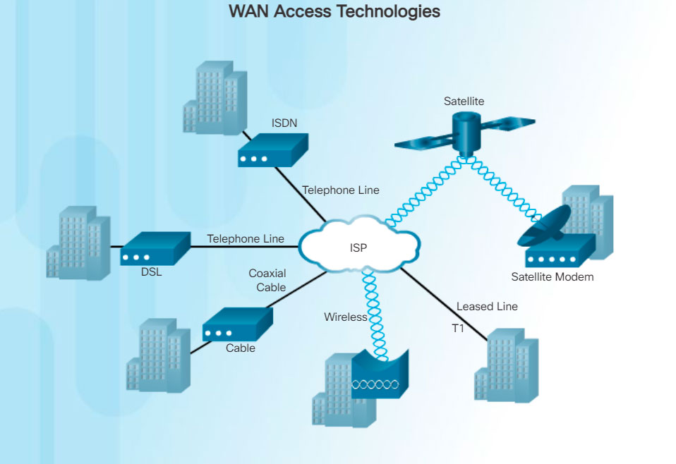

There are several WAN access connection options that ISPs can use to connect the local loop to the enterprise edge. These WAN access options differ in technology, speed, and cost. Each has distinct advantages and disadvantages. Familiarity with these technologies is an important part of network design.

As shown in Figure 1, there are two way that an enterprise can get WAN access:
- Private WAN infrastructure - Service providers may offer dedicated point-to-point leased lines, circuit-switched links, such as PSTN or ISDN, and packet-switched links, such as Ethernet WAN, ATM, or Frame Relay.
- Public WAN infrastructure - Service providers may offer broadband Internet access using digital subscriber line (DSL), cable, and satellite access. Broadband connection options are typically used to connect small offices and telecommuting employees to a corporate site over the Internet. Data travelling between corporate sites over the public WAN infrastructure should be protected using VPNs.
The topology in Figure 2 illustrates some of these WAN access technologies.
